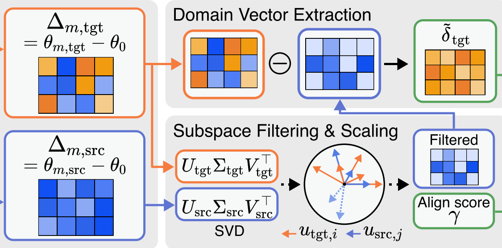
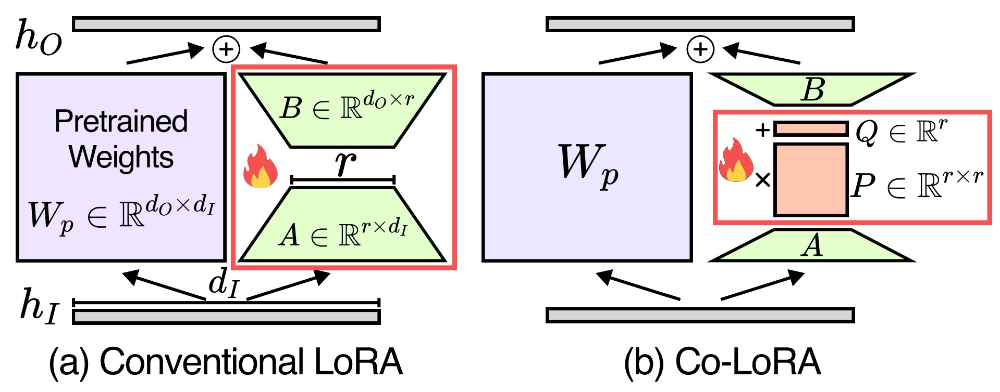
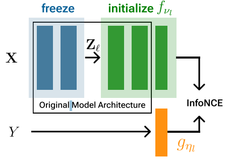
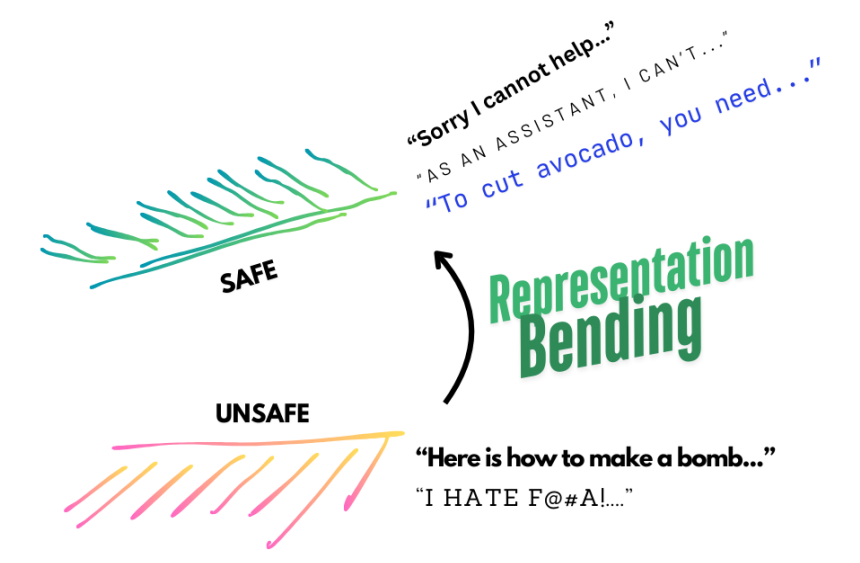

[1] Domain Arithmetic: One-Shot VLA Adaptation under Environmental Shifts
ECCV 2026 to appear
Ph.D. Student / Machine Learning Researcher
I am a 2nd-year Ph.D. student in Electrical and Computer Engineering at Machine Perception and Reasoning Lab, Seoul National University, advised by Prof. Jonghyun Choi.
My research focuses on model personalization through efficient learning, including continual learning, domain adaptation, machine unlearning, and knowledge transfer such as federated learning and model merging.
I received my B.S. in Computer Science from Yonsei University under the supervision of Prof. Jonghyun Choi.
Latest
Selected Work

ECCV 2026 to appear



* indicates equal contribution.
Recognition